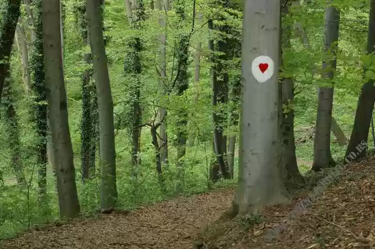

SRBIJA
Najstariji domaći Nacionalni park „Fruška gora“ proglašen 1960. godine, čuven je po svojim pitomim padinama, stoletnim šumama i nadaleko poznatom
vinogorju. Zbog složenosti svog geološkog sastava, i građe od stena iz gotovo svih geoloških perioda, predstavlja svojevrsno ogledalo geološke
prošlosti ovog područja.
Obuhvata najviše grebenske delove brdskog masiva Fruške gore, najdominantnijeg uzvišenja u Vojvodini, koje se kao zeleno ostrvo uzdiže na južnoj
granici Panonske nizije, uz samu obalu Dunava. Prostire se na površini od 25.393 ha, sa zaštitnom zonom od 66.090 ha.
Frušku goru odlikuje bogat i raznovrstan živi svet. Nekada ostrvo u Panonskom basenu, Fruška gora je još od davnog pliocena ostala pogodno stanište
za mnoge mediteranske i submediteranske vrste. Šume zauzimaju 90% površine Parka, a dominiraju šume lipe, hrasta i bukve. Najinteresantnije su šume
kitnjaka i graba sa kostrikom, i reliktne mešovite šume hrastova sa grabićem. Floru Fruške gore čini oko 1500 biljnih vrsta, među kojima preko 40 ima
status prirodnih retkosti Srbije (npr. tercijarni relikti: lovorasti jeremičak, kadivka, zvončić; od relikata stepe: tatarsko zelje, velika sasa,
gorocvet i babaluška). Od prisutnih preko 30 vrsta orhideja, 18 vrsta je od međunarodnog značaja.

U bogatoj fauni ističu se zaštićene vrste insekata, 14 vrsta vodozemaca i gmizavaca na Crvenoj listi ugroženih vrsta, i oko 211 vrsta ptica, među
kojima je 130 vrsta gnezdarica. Fruška gora, jedno od najznačajnijih područja za gnežđenje retkih ptica u Panonskoj niziji i Srbiji, za sada je
jedina tačka u Srbiji na kojoj se nalaze aktivna gnezda orla krstaša, najugroženije vrste sa Svetske crvene liste. Među brojnim vrstama sisara, izdvaja
se zaštićena grupa slepih miševa, tekunica i slepo kuče, ali tu su i druge prirodne retkosti.
Pored izuzetnih prirodnih vrednosti, ovo područje karakterišu i brojni spomenici kulture, gde se izdvaja 16 pravoslavnih manastira sagrađenih u periodu
od 15. do 18. veka.